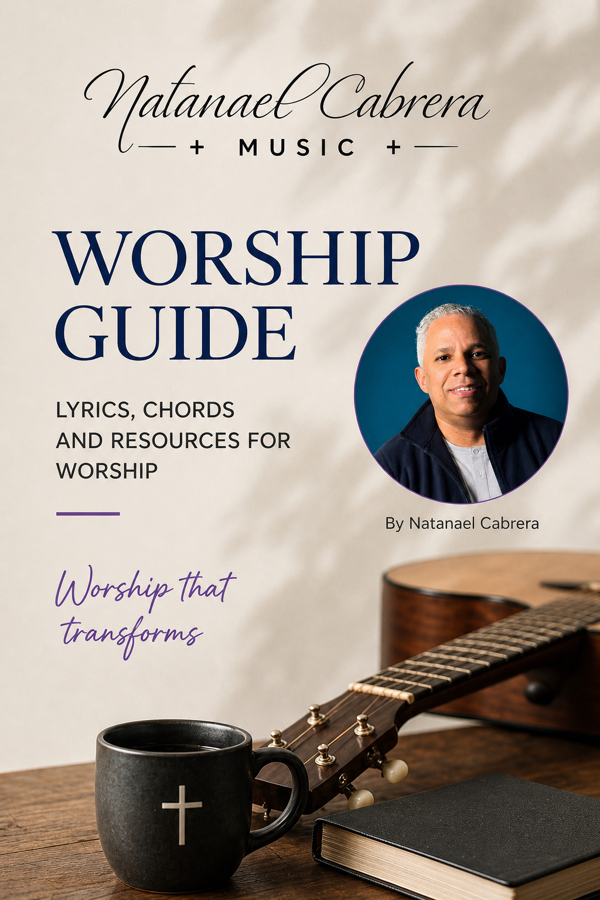
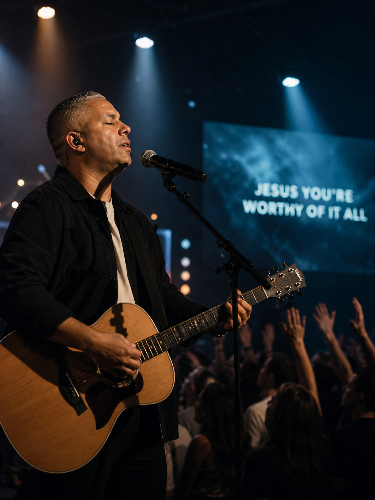

Lead the Room
Help people move from distraction into encounter.

Worship is more than music. It is a lifestyle of surrender, obedience, and devotion that turns songs into ministry and skill into service.
Before a worshipper ever steps onto a platform, there is a private place where the heart is prepared. Prayer, Scripture, humility, and personal integrity shape the sound long before the first chord is played.
Leading worship carries responsibility. We are not simply filling time in a service; we are helping people lift their attention back to God, respond with faith, and participate with confidence.
This guide was created to help worshippers lead with spiritual sensitivity, musical excellence, and humility. Use it as a roadmap for preparation, rehearsal culture, team unity, and growth that serves the church well.

Help people move from distraction into encounter.
Make every decision support the moment, not the ego.
Develop musical confidence without losing spiritual focus.
“The goal is not to perform worship, but to make space for people to meet with God.”
True worship begins with revelation: we see who God is, and our response becomes surrender.
Music can carry worship, but it cannot replace it. Worship is expressed in obedience, gratitude, repentance, reverence, celebration, and love.
The strongest worship leaders are formed in private before they are trusted in public.
Talent opens a door, but character sustains the assignment. A worshipper cultivates prayer, humility, teachability, consistency, and a clean heart.
A strong setlist has movement. It carries the church through invitation, declaration, surrender, and response.
Begin with energy, truth, and accessibility.
Choose songs that lift faith and unify the room.
Create space for prayer, reflection, and surrender.
End with clarity, hope, and a strong spiritual landing.
Consider key flow, tempo arc, lyrical themes, congregation familiarity, transitions, and the message of the service.
Excellence removes distractions. Preparation gives the team freedom to worship while they play.
Intro, verse, chorus, bridge, turnarounds, tags, endings, and any spontaneous sections.
Dynamics, timing, tone, and space matter more than playing every possible note.
Pick singable keys for the congregation, not just the lead vocalist.
Build moments intentionally: soft, lift, full, drop, resolve.
Practice musical bridges between songs before Sunday.
Play as one body. Leave space for vocals, prayer, and the room.
Technology should support worship, not steal focus from it.
Click tracks, pads, lyric systems, in-ear monitors, and soundboards are tools for unity and clarity. Keep the setup simple enough that the team can use it confidently.
Choose songs with theology, singability, and pastoral purpose. A great worship song helps the whole church participate.
Match lyrics to the message, season, and spiritual direction of the service.
Prepare charts in the right keys and simplify arrangements when needed.
Share demos, maps, lyrics, and notes before rehearsal day.
Balance new songs with familiar songs the church can sing boldly.
Filling every space can crowd the moment. Simplicity often carries more authority.
Unlearned parts create stress and pull attention away from ministry.
Following the plan matters, but so does discerning the room and honoring leadership.
The platform is not a stage for ego. It is a place of service.
“A prepared team can be flexible. An unprepared team is forced to survive.”
Worship ministry is built one surrendered yes at a time. Keep growing in the secret place, keep sharpening your craft, and keep serving people with love.
Follow updates, coaching resources, and new worship tools.
Review songs early and come ready to serve the team.
Bring unity, humility, and encouragement into every room.
Website: Natanael Cabrera Music
Instagram: @natanaelcabreramusic
YouTube: Natanael Cabrera Music